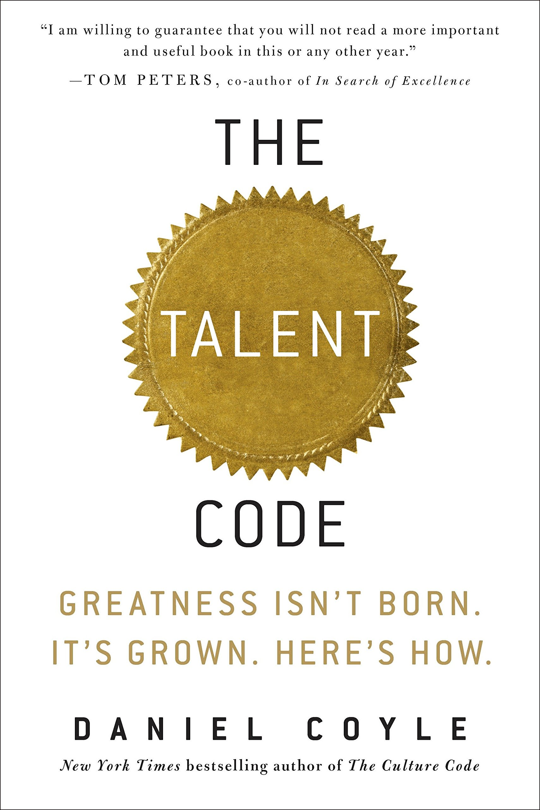

Favorite Book


The Talent Code

No matter your goals, Atomic Habits offers a proven framework for improving--every day. James Clear, one of the world's leading experts on habit formation, reveals practical strategies that will teach you exactly how to form good habits, break bad ones, and master the tiny behaviors that lead to remarkable results.
If you're having trouble changing your habits, the problem isn't you. The problem is your ... system. Bad habits repeat themselves again and again not because you don't want to change, but because you have the wrong system for change. You do not rise to the level of your goals. You fall to the level of your systems. Here, you'll get a proven system that can take you to new heights.
Clear is known for his ability to distill complex topics into simple behaviors that can be easily applied to daily life and work. Here, he draws on the most proven ideas from biology, psychology, and neuroscience to create an easy-to-understand guide for making good habits inevitable and bad habits impossible. Along the way, readers will be inspired and entertained with true stories from Olympic gold medalists, award-winning artists, business leaders, life-saving physicians, and star scomedians who have used the science of small habits to master their craft and vault to the top of their field.
What is the secret of talent? How do we unlock it? In this groundbreaking work, journalist and New York Times bestselling author Daniel Coyle provides parents, teachers, coaches, businesspeople—and everyone else—with tools they can use to maximize potential in themselves and others.
Whether you're coaching soccer or teaching a child to play the piano, ...writing a novel or trying to improve your golf swing, this revolutionary book shows you how to grow talent by tapping into a newly discovered brain mechanism.
Drawing on cutting-edge neurology and firsthand research gathered on journeys to nine of the world's talent hotbeds—from the baseball fields of the Caribbean to a classical-music academy in upstate New York—Coyle identifies the three key elements that will allow you to develop your gifts and optimize your performance in sports, art, music, math, or just about anything.
• Deep Practice--Everyone knows that practice is a key to success. What everyone doesn't know is that specific kinds of practice can increase skill up to ten times faster than conventional practice.
• Ignition--We all need a little motivation to get started. But what separates truly high achievers from the rest of the pack? A higher level of commitment—call it passion—born out of our deepest unconscious desires and triggered by certain primal cues. Understanding how these signals work can help you ignite passion and catalyze skill development.
• Master Coaching--What are the secrets of the world's most effective teachers, trainers, and coaches? Discover the four virtues that enable these "talent whisperers" to fuel passion, inspire deep practice, and bring out the best in their students.
Robert Kiyosaki, author of Rich Dad Poor Dad, had two main influential fathers in his life.
Poor Dad was Kiyosaki's biological father, a man who was highly intelligent and very well educated. Poor Dad believed in studying hard and getting good grades, then finding a well-paying job. Yet, despite these seemingly positive attributes, Poor Dad didn't do well financially.
Rich Dad was the father of Kiyosaki's best friend. He had a similar work ethic to Kiyosaki's real dad, but ... with a twist. Rich Dad believed in financial education, learning how money works, and understanding how to make money work for you. Although he was an eighth-grade dropout, Rich Dad eventually became a millionaire by putting the power of money to work for him.
The book is written from Kiyosaki's perspective of how Rich Dad went about making money and the mistakes that Poor Dad made. The first six chapters of Rich Dad Poor Dad make up about two-thirds of the book and discuss the six lessons that Kiyosaki learned from his Rich Dad.
Robert T. Kiyosaki learned early on that the real reason the rich get richer and the poor get poorer fix the financial savvy passed down from one generation to the next, rather than the money itself. RICH DAD, POOR DAD uses the author's two "fathers" -- one, an entrepreneur who mentored Kiyosaki, and his real father, an academic -- as models of two starkly different approaches to finance.Kiyosaki's many insights for individual investors include:
- How to raise capital for investments without going to the bank
- Why a high salary alone can't create real wealth
- Why "study hard, get good grades, find a secure job" is the most dangerous advice a parent can give